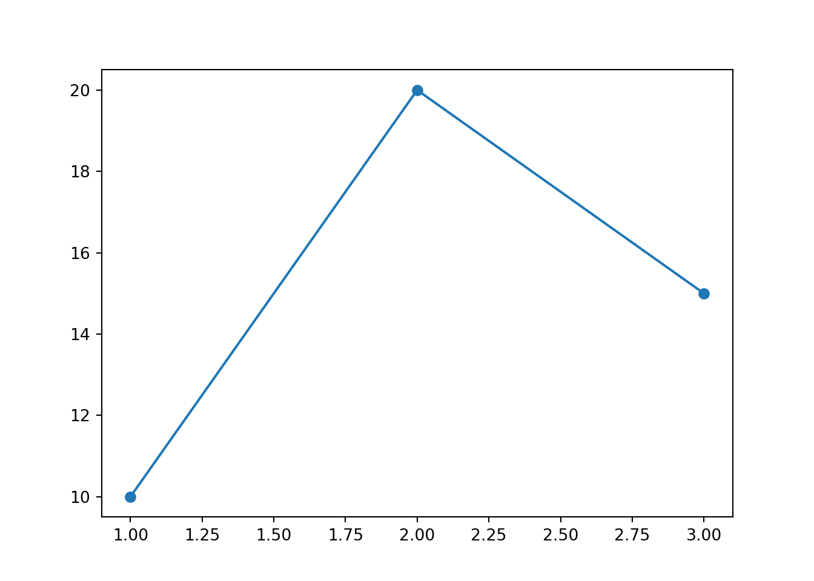

Syntax
Codestyle
A codestyle is a set of conventions and rules for building script and writing the code within it. Adhering to the following rules is partly mandatory for it to run successfully or simply makes your scripts easier to read for others (and for your “future self”) and ensures that your analysis can be maintained over time.
Meta settings
Within a script, important meta-information can be provided using the YAML header. This includes not only the author, the date, or the integration of citations, but also formatting options for the rendered document. Here is examplary content of a YAML header:
title: “Analysis of Psychological Well-being” author: “Your Name” date: last-modified
bibliography: references.bib # Path to your bibliography file (see section “Citation” in the workflow chapter) csl: apa.csl # Path to your citation style file (see section “Citation” in the workflow chapter)
format: html: toc: true # Adds a Table of Contents number-sections: true # Numbers your headings code-fold: true # Allows readers to click to show/hide code execute: echo: true # Shows the code in the output by default (global setting) warning: false # Hides R/Python warnings in the final report (global setting)
Dependencies
Always load your libraries/packages at the very top of your script. This acts as a “list of ingredients” so others know what needs to be installed before running your code. Make sure you do not include any unnecessary packages, as this can lead to confusion and potential issues with package conflicts. Please also make sure to not include the installation of the package (e.g., install.packages("ggplot2")) in the script, as this can lead to issues when running the script on different devices. Instead install necessary packages directly in the Console. The loading of packages can take place within the script:
Python and R do not share the same packages. For data visualization, a commonly used package in Python is matplotlib. To load it, you can use the following code:
Code
import matplotlib.pyplot as pltChunk options
In the IDE of RStudio, settings how chunks should behave globaly can be set within the YAML header. However, these settings can be overwritten for each chunk individually by adding the following options at the beginning of a chunk:
#| eval: true
#| echo: true
#| output: true
#| warning: true
#| error: true
#| include: trueThe settings of a given chunk can also be set directly within the curly brackets at the beginning of a chunk, for example:
{r, eval = TRUE, echo = TRUE, output = TRUE, warning = TRUE, error = FALSE, include = FALSE}Here are the explanations of the different options: - eval: true: The chunk is actually executed/calculated. - echo: true: The code of the chunk is visible in the rendered document. - output: true: The results of the chunk (e.g., a table) are shown. - warning: true: R warnings appear in the document. error: false: If the code within the chunk has an error, rendering stops immediately (safe mode). - include: false: The chunk, including code, output, and potential warnings or errors, is completely ignored.
Please note that this is not an extensive list of all available chunk options. For more, see for example the quarto documentation about code cells and knitr chunk options.
Hardcoded values
Avoid hardcoded values within your code. Instead, define them as variables within a single chunk at the beginning of your script. This makes it easier to update values in one place and ensures consistency throughout your code. To make it easier to identify hardcoded values in the script, you can use a specific naming convention (e.g., all uppercase letters with underscores) for these variables.
Visual structure
Headings are the basis for the table of content (toc) in the rendered html-file when such is enabled in the YAML header. They also help to structure the code and make it easier to navigate for others (and for your “future self”). It is recommended to use at least three levels of headings (e.g., #, ##, and ###) to create a clear structure.
Portability
A reproducible script should work regardless of which computer it is running on. Absolute paths (e.g., C:/Users/Username/Documents/...) are the “enemy” of reproducibility because they only exist on your specific device.
Relative paths point to a location relative to your project’s root folder.
Code
# Bad: Absolute path
my_data <- read.csv("C:/Users/Username/Documents/Project/data/raw/my_data.csv")Code
id age condition reaction_time attention_check
1 1 61 Treatment 2.363845 passed
2 2 62 Treatment 2.255621 passed
3 3 31 Control 1.220228 passed
4 4 57 Treatment 2.870667 passed
5 5 48 Control 1.349816 passed
6 6 42 Treatment 1.701745 passedIn Python, you can achieve the same using the os module to construct relative paths:
Code
# Good: Relative path using 'os' (Python`s root is the respective file directory, not the project directory)
path = os.path.join("..", "data", "raw", "my_data.csv")
my_data = pd.read_csv(path)Naming Conventions
Clear naming is the first step toward “self-documenting code.”
Variables: Use nouns (e.g.,
participant_scores).Functions: Use verbs (e.g.,
calculate_mean).Style: Use snake_case (lowercase letters with underscores) for both R and Python.
Avoid generic names like data1, temp, or foo. Instead, be descriptive: raw_survey_data is much more helpful than just df.
Seed
If your analysis involves random processes (like creating random groups or running a bootstrap), you must set a seed. This ensures that the “random” numbers are the same every time the script is run. this ensures reproducibility across devices and over time.
Code
random.seed(123)
random.sample(range(1, 10), 5)[1, 5, 9, 4, 3]Functions
Don`t repeat yourself (DRY): If you find yourself writing the same code multiple times, it’s a sign that you should create a function. This reduces errors—if you need to change a parameter, you only have to change it in one place.
Code
#' Convert Celsius to Fahrenheit
#'
#' The function converts a temperature value from Celsius to Fahrenheit.
#' @param celsius A numeric value representing degrees Celsius.
#' @return A numeric value representing degrees Fahrenheit.
# Define the conversion function
convert_celsius_to_fahrenheit <- function(celsius) {
# Calculate fahrenheit using the standard formula
fahrenheit <- (celsius * 9/5) + 32
# Return the final result
return(fahrenheit)
}
# Apply the function to different values
convert_celsius_to_fahrenheit(0) # Freezing point[1] 32Code
convert_celsius_to_fahrenheit(20) # Room temperature[1] 68Code
convert_celsius_to_fahrenheit(37) # Body temperature[1] 98.6Code
# Define the conversion function
def convert_celsius_to_fahrenheit(celsius):
"""
The function convert_celsius_to_fahrenheit converts a temperature value from Celsius to Fahrenheit using the standard formula F = (C × 9/5) + 32.
Arguments: @param celsius: A numeric value (or vector/series) representing the temperature in degrees Celsius.
Return value: A numeric value (or vector/series) representing the corresponding temperature in degrees Fahrenheit
"""
# Calculate fahrenheit using the standard formula
fahrenheit = (celsius * 9/5) + 32
# Return the final result
return fahrenheit
# Apply the function to different values
print(convert_celsius_to_fahrenheit(0)) # Freezing point32.0Code
print(convert_celsius_to_fahrenheit(20)) # Room temperature68.0Code
print(convert_celsius_to_fahrenheit(37)) # Body temperature98.6Parallelization
Normally, your code runs sequentially (one task after another). If you have a computer with multiple CPU cores, parallelization allows you to run multiple independent tasks at the same time, significantly reducing execution time for “embarrassingly parallel” tasks.
You can use it, for example, in R (Simulations) if you need to run a lot of independent iterations of the same model or in Python if you want to make many requests to APIs or networks in general.
Consult your supervisor for more information on how to implement parallelization in your specific project, as it can be complex and may not be necessary for all analyses. # ToDo
Plots and figures
Plots and figures of your final thesis should never be edited manually but always within the script only. This ensures they are fully reproducible. You can save your plots and figures directly from your script using the ggsave() function in R or the savefig() function in Python.
Code
# Create a simple plot
plot <- ggplot(mtcars, aes(x = wt, y = mpg)) +
geom_point() +
theme_minimal()
# Show plot
plot
Code
# Save the plot
ggsave(here("outputs", "figs", "mtcars_plot.png"), plot = plot, width = 6, height = 4)Code
# Create a simple plot
plt.plot([1, 2, 3], [10, 20, 15], marker='o')
# Show plot
plt.show()
Code
# Save the plot (Python`s root is in the respective file directory, not the project directory)
plt.savefig(os.path.join("..", "outputs", "figs", "own_example_plot.png"))
Equations
If you want to write mathematical formulas or just simple equations in your report (e.g., to explain a statistical model), you can use LaTeX syntax directly within your Quarto document: $y = \beta_0 + \beta_1 x + \epsilon$.
For standalone formulas on a new line, use double dollar signs:
$$y = \beta_0 + \beta_1 x + \epsilon$$
When rendered, this will display the formula in a professional mathematical format like \(y = \beta_0 + \beta_1 x + \epsilon\).
In-line Code
In-line code allows you to include the results of code directly within your text. This is particularly useful for reporting specific values, such as means, standard deviations, or p-values, without having to create a separate code chunk for it. In R, you can use the r syntax to include in-line code.
This document was last rendered on the 2026-04-15.
To better understand the source code behind the in-line code and other style related code syntax it is recommended to click on the </>Code-button in the top right corner of this page and select “Show source code”. This will show you the source code of this the respective page.
Session
At the end of your report, always include a summary of your system and software versions. This is vital for troubleshooting if a package update or software update breaks your code in the future.
Code
R version 4.5.2 (2025-10-31 ucrt)
Platform: x86_64-w64-mingw32/x64
Running under: Windows 11 x64 (build 22631)
Matrix products: default
LAPACK version 3.12.1
locale:
[1] LC_COLLATE=German_Switzerland.utf8 LC_CTYPE=German_Switzerland.utf8
[3] LC_MONETARY=German_Switzerland.utf8 LC_NUMERIC=C
[5] LC_TIME=German_Switzerland.utf8
time zone: Europe/Zurich
tzcode source: internal
attached base packages:
[1] stats graphics grDevices datasets utils methods base
other attached packages:
[1] ggplot2_4.0.2 here_1.0.2 furrr_0.4.0 future_1.70.0
loaded via a namespace (and not attached):
[1] Matrix_1.7-5 gtable_0.3.6 jsonlite_2.0.0 compiler_4.5.2
[5] renv_1.2.0 Rcpp_1.1.1 parallel_4.5.2 globals_0.19.1
[9] scales_1.4.0 png_0.1-9 yaml_2.3.12 fastmap_1.2.0
[13] reticulate_1.46.0 lattice_0.22-9 R6_2.6.1 labeling_0.4.3
[17] knitr_1.50 rprojroot_2.1.1 RColorBrewer_1.1-3 rlang_1.2.0
[21] xfun_0.54 S7_0.2.1 cli_3.6.6 withr_3.0.2
[25] magrittr_2.0.5 digest_0.6.39 grid_4.5.2 rstudioapi_0.18.0
[29] rappdirs_0.3.4 lifecycle_1.0.5 vctrs_0.7.3 evaluate_1.0.5
[33] glue_1.8.0 farver_2.1.2 listenv_0.10.1 codetools_0.2-20
[37] parallelly_1.46.1 rmarkdown_2.30 purrr_1.2.2 tools_4.5.2
[41] htmltools_0.5.9 Code
session_info.show()-----
matplotlib 3.10.8
pandas 3.0.2
session_info 1.0.0
-----
Python 3.12.13 | packaged by conda-forge | (main, Mar 5 2026, 16:36:12) [MSC v.1944 64 bit (AMD64)]
Windows-11-10.0.22631-SP0
-----
Session information updated at 2026-04-15 12:31The IDE RStudio offers an automatic formatter. Use Ctrl + Shift + A (Windows) or Cmd + Shift + A (Mac) to reformat a highlighted code block.
Comments
Comments should explain why you are doing something, rather than describing the code itself. Anyone can look up what e.g. the
mean()function does, but only you know why you chose to exclude certain outliers before calculating it.Code
Code